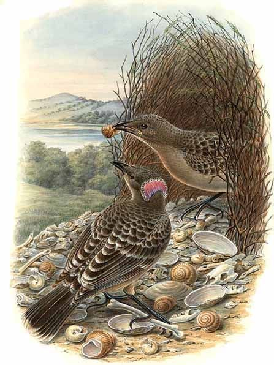

Animals often compete with others of their species for food, water, territory, and a mate. They vie with each other because these resources are often limited. Sometimes they may also have to compete with other species for these resources.
For food: Carnivores are more likely to succeed if they have a strong bite (to kill their prey and/or chew through meat) and are fast (to catch the prey). A cheetah preying on an impala antelope will catch it quickly and bite its neck to kill it.
Other animals that are less quick may hunt in packs and use sheer strength to kill their prey: lions may work together to catch antelopes or even bigger animals such as buffalo, killing them by strangulation.
A cheetah uses its immense speed to outrun and catch its prey. But these bursts of energy also tire it very quickly
A herbivore that eats a wide variety of plants may always be able to find food. Similarly, one that eats a plant that no other nearby animal eats may always have plenty of food; however, if this is the only plant it can eat, it may not survive if that plant dies out.
For territory: Some animals need a large area to find enough food for themselves and their offspring. Birds may only need a small nest, but may compete to put theirs in a safe tree or to build it quickly in an easy place (e.g. stork nests in disused chimneys).
The anole lizard’s territory often includes a high lookout: from there it may fan its dewlap and hiss to deter other anoles from invading its patch
For a mate: animals usually need to compete for a mate with others of their same species. Some physically fight – antelopes lock horns; elephant seals bite each other. Others use peaceful yet complex means to attract females – the male bowerbird courts by building a shelter (a bower) over many months, adorning its entrance to attract female bowerbirds.

The bowerbird adorns the bower entrance with shells and other curios: even shiny human litter like bottle tops!
One form of food competition between different animal species is directly with each other as predator and prey. The cheetah described above does not always catch the antelope: impala can be pretty quick runners, too. They can also use their group as protection: they may jump about wildly to intimidate the cheetah.
The animal with the best overall adaptation for the circumstances of its habitat is the one most likely to survive and thrive. It will find enough food. It will find a mate. These successes will likely ensure that it has offspring and that it can feed them.
Examiner’s tip: “When thinking about two different species whose prey overlap – e.g. lion/cheetah vs. antelope – note that they may be equally capable of obtaining their food, but using their own particular methods (adaptations).”
Competition in plants
Like animals, plants also compete with each other for food, water and territory. They compete for water and nutrients in the soil; these are used in photosynthesis and in their cell tissue. They compete for light from the Sun, which is essential for photosynthesis
Some root systems extend deep underground. Roots of the giraffe thorn tree can reach 50 metres below ground. Other tree roots cover a wide, shallow area: the giant redwood tree can grow to 100 metres; the diameter of its roots can be just as large.
A dense canopy of redwood trees in Muir Woods, California, USA
Plants compete for light for photosynthesis (see Section X.X). The rich soils of a rainforest mean that many trees need the same nutrients: they grow close together. They also strongly compete for light: they grow tall and/or have big leaves to capture as much light as possible.
The strangler fig is found in thick forests. There is strong competition for space on the forest floor to put down roots, so its seeds start their life high up in the branches of trees: tree dwelling animals leave the seeds in their droppings on the branches. At this height the seeds get light from the Sun and water from rain.
They grow slowly at first, sending long thin roots down to the ground. Once rooted, the tree itself starts to form, spreading itself around the host and strangling the flow of nutrients in the host’s trunk. It continues to grow, reaching up for light; the host tree rots and dies.
A strangler fig taking over an elm near Richmond River, Australia
The animals that eat strangler fig seeds may run up trees all over the forest, leaving their droppings there. This gives the seeds a chance to ‘find’ their own space in the branches of trees far away from their parent.
Many plants need to disperse their seed so that their offspring do not compete with them directly. A common dispersal method is wind. For example, the white circular head of some dandelion flowers is made of hundreds of seed ‘parachutes’:
Some plants are poisonous or have thorns to discourage animals from eating them. They compete against their animal herbivore predator. For example, the giraffe thorn tries to protect itself by growing thorns that are like barbed wire.
.jpg)
.jpg)


.jpg)